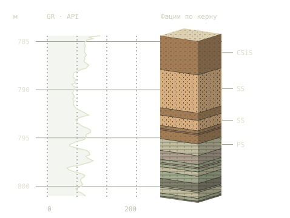

Интерпретация данных ГИС
Литология
по каротажу
Загрузите кривые ГИС, сравните прогноз фаций с керном и уточните разметку по глубине.
Файл обрабатывается в вашем браузере и никуда не отправляется

- 1
Загрузите кривые
GR, сопротивление, пористость, PE. Названия столбцов сайт распознает сам, в том числе русские.
- 2
Изучите планшет
Кривые, прогноз фаций и керн рядом. Интервалы, где модель не уверена, подсвечены.
- 3
Поправьте и скачайте
Не согласны с моделью — выберите свою фацию. Итоговая разметка скачивается в CSV.
Интервалы
Подряд идущие точки замера с одной фацией объединены в интервал. Красная метка слева — средняя уверенность модели по интервалу ниже порога. Нажмите на строку, чтобы найти интервал на планшете; не согласны с моделью — выберите фацию в столбце «Решение геолога».
| Кровля | Подошва | Мощность | Прогноз | Средняя уверенность | Решение геолога |
|---|
Сравнение с керном
Строки — фация по керну, столбцы — прогноз. В клетке — число точек замера; чем она ярче, тем больше доля от всех точек этой фации. Диагональ — совпадения.
Какие фации модель путает
Проверка на скважинах, которых модель не видела. Строки — керн, столбцы — прогноз, в клетке — число точек замера.
Какие кривые важнее
Вклад каждой кривой в решение модели.
Как хорошо находится каждая фация
Доля точек замера каждой фации, которые модель определила верно (на проверочных скважинах).
Можно ли верить уверенности модели
Как это устроено
Модель — градиентный бустинг CatBoost (500 деревьев глубины 4). Она обучена на размеченных по керну скважинах месторождения Hugoton–Panoma (Канзас) и для каждой глубины оценивает вероятность девяти фаций. Глубины в этом датасете записаны в футах, шаг замера — полфута. На планшете и в выгрузке глубина приведена к метрам (шаг 0,1524 м).
Скважины делятся на обучающие и проверочные целиком: все измерения одной скважины попадают только в одну группу. Так оценка честно показывает, чего ждать на новой скважине.
Расчёт идёт прямо в браузере: деревья модели выгружены в файл, а результат сверен с исходной моделью на Python на всех точках замера датасета.
Формат данных
Как подготовить файл
Таблица, где одна строка — одна глубина. Подойдут CSV, Excel и LAS. Названия столбцов могут отличаться: сайт узнает их сам, а если не узнает — предложит выбрать.
Про сам файл
- В одном файле может быть несколько скважин — тогда нужен столбец с названием скважины.
- CSV с разделителем
;и десятичной запятой читается как есть, в кодировках UTF-8 и Windows-1251. - Строки, где в кривых есть пропуски, в расчёт не попадают — сайт сообщит, сколько их.
Шаблон
Скачайте пример правильно оформленного файла и замените значения своими.
Скачать шаблон CSV